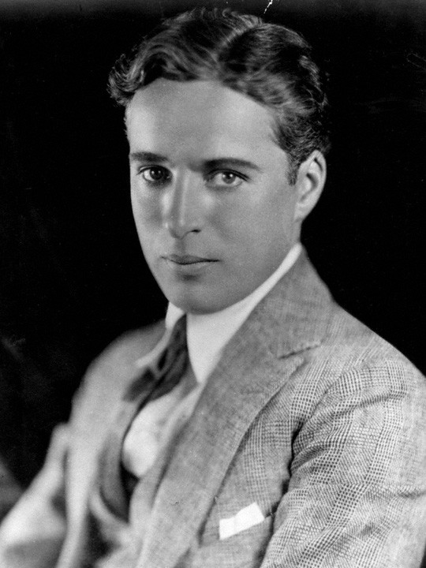
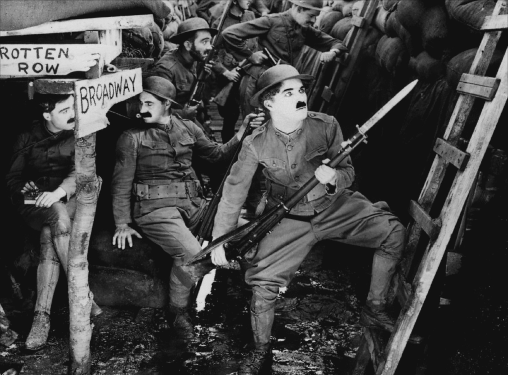
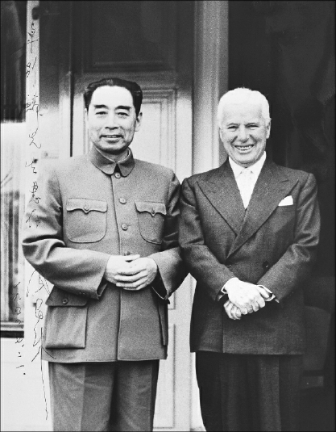

| 查尔斯・斯宾赛・卓别林爵士（Sir Charles Spencer Chaplin，1889年－1977年），著名喜剧演员、导演，在好莱坞电影的早期和中期尤为成功活跃。他奠定了现代喜剧电影的基础，与哈罗德・劳埃德和巴斯特・基顿并称为“世界三大喜剧演员”。戴着圆顶硬礼帽和礼服的卓别林的形象几乎成了喜剧电影的重要代表，往后不少艺人都模仿过他的表演方式。 |  |
查尔斯・卓别林于1889年4月16日出生于伦敦。12岁半时，父亲老查理・卓别林酗酒去世，母亲患精神病被送入一个精神病院。7年后，他离开了孤儿学校，成了一名流浪儿。卓别林当过报童、杂货店小伙计、玩具小贩、医生的小佣人、吹玻璃的小工人，还在游艺场扫过地。 1912年10月2日，卓别林随同卡尔诺默剧剧团进入美国。当时，电影导演麦克・塞纳特看到卓别林的表演后雇用卓别林。1914年到1923年间，卓别林拍摄了大量的短片，以精湛的默剧技巧、完美的银幕形象成为闻名世界的喜剧演员。图为上映于1918年的《从军记》的剧照。  1918年，查理・卓别林创建了他自己的好莱坞公司，在艺术与经济方面对自己的电影获得了前所未有的控制。在此后的35年中，他凭借着自己的独立优势创造了许多不朽的杰作，这些作品至今不失其娱乐价值和影响力，包括：《狗的生活》（1918年）、《从军记》（1918年）、《寻子遇仙记》（1921年）、《淘金记》（1925年）等。 有声电影发明后，卓别林还拍了两部他最著名的无声电影《城市之光》（1931年）和《摩登时代》（1936年），此后他开始转向有声电影。卓别林的有声电影包括《大独裁者》（1940年）、《凡尔杜先生》（1947年）、《舞台生涯》（1952年）等。 尽管查理・卓别林从1914年至1952年始终住在美国，但他一直保持着他的英国国籍。在麦卡锡主义时期，卓别林被指责从事“众议院非美活动调查委员会”，并怀疑倾向共产主义。约翰・埃德加・胡佛下令联邦调查局秘密收集查理・卓别林的情报并建立了一个秘密档案，胡佛还试图将查理・卓别林驱逐出境。1952年，查理・卓别林离开美国，他本来打算短暂访问英国家乡。胡佛听到这个消息后，与美国移民及归化局商议取消查理・卓别林的再入境许可。 查理・卓别林得知后，发出声明: “自从上次大战以来，我就成了强势反动团体制造的谎言和宣传的目标，他们有影响力，有美国黄色媒体的帮助，创造了一种氛围，才让有自由意识的人都被凸显，并受到迫害。因此我决定我已无法进行我的电影工作，我将放弃在美国的居留权。”  离开美国后，他决定留在欧洲，举家定居瑞士沃韦。图为卓别林与周恩来总理的合照。1972年，83岁高龄的他与他的夫人短暂回访美国来领取奥斯卡荣誉奖。尽管他是受电影艺术与科学学院的邀请回到美国的，美国当局只给他发了一个为期两个月的一次性入境签证。 卓别林的一生传奇而曲折，他的故事被后人拍摄为电影《卓别林传》，小罗伯特・唐尼主演；电影于1992年12月上映。 |